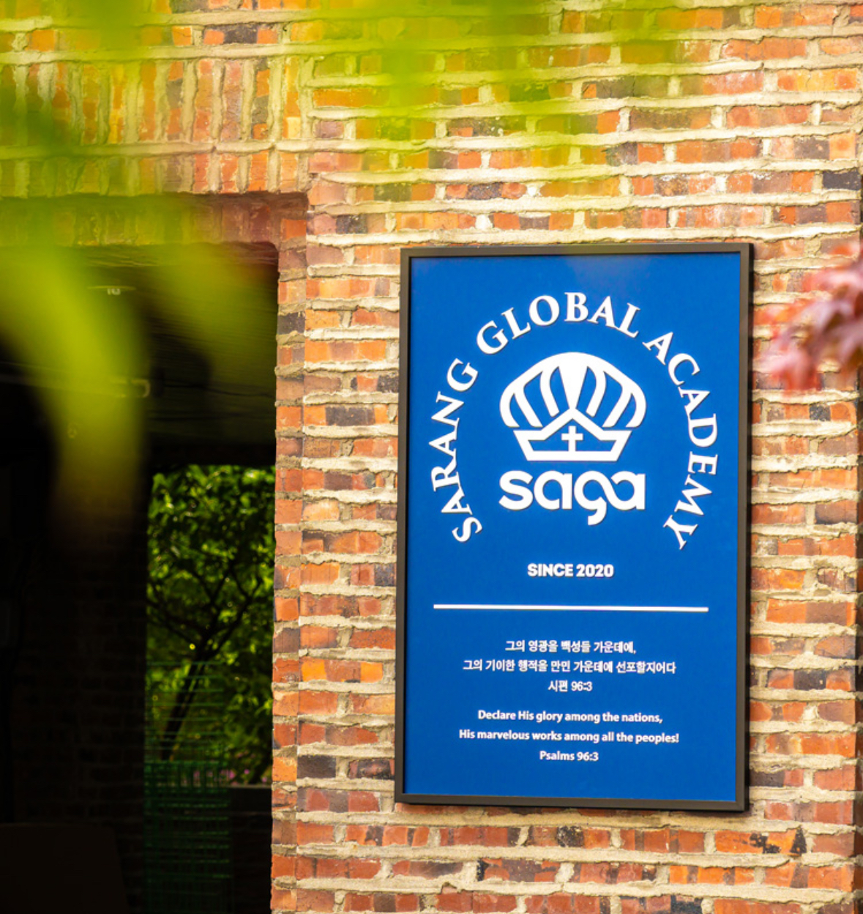
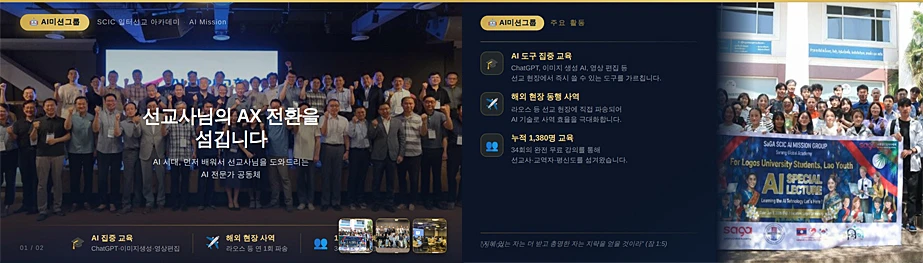
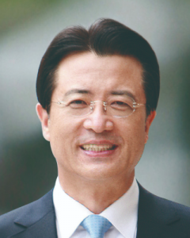
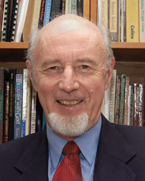
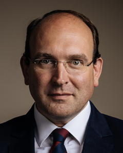
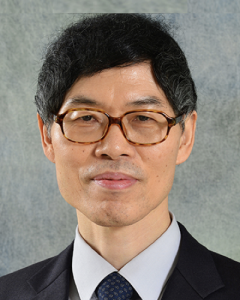

졸업생 대담
BUSINESS IS MISSION일이 선교입니다
DISCOVER SaGA
일이 선교가 되는 삶
일이 축복이 되는 삶
우리의 일터가 하나님 나라의 현장으로
7기 모집영상으로 SaGA를 만나보세요
일터에서 시작되는 새로운 이야기YouTube에서 보기 ↗

PURPOSE & VISION
월요일의 삶까지
이어지는 제자도
일터는 하나님과 이웃을 섬기는 삶의 현장입니다. 일과 신앙을 연결하고, 각자의 전문 영역에서 복음의 선한 영향력을 넓혀갑니다.
- 01
일터 · 삶의 현장
소명 의식
내가 하는 일의 의미를 성경적 관점으로 새롭게 발견합니다.
- 02
일터신학 + 실천전략
영역별 선교사
배운 것을 전문 영역에 적용하며 실천의 방향을 세웁니다.
- 03
Global Mind + Salt & Light
글로벌 네트워크
크리스천 리더와 연결되어 함께 성장합니다.
EXPERIENCE SaGA
먼저 보고, 듣고,
나의 일터를 떠올려 보세요
짧은 말씀부터 공개 특강, 과정 소개까지
배움의 첫 장을 지금 펼쳐보세요
공개 강의·설교·과정 소개 영상으로, 실제 수업 전체와는 구성이 다를 수 있습니다.
VOICES OF SaGA
나보다 먼저 시작한
선배들의 이야기
입학을 고민했던 순간부터 일터에서의 변화까지
선배들의 경험에서 나의 다음 걸음을 그려보세요
생도 이야기
일터 선교의 온전함, 첫 번째 이야기
YouTube에서 보기생도 이야기
일터 선교의 온전함, 두 번째 이야기
YouTube에서 보기5기 수료 간증 · 08:27부터
이민근·정혜원 생도의 이야기
YouTube에서 보기5TH COHORT
각자의 일터에서 시작된 변화
서울 강남캠퍼스
이민근
안수집사 · 사랑의교회 · (주)디트루 대표
배움으로 다시 세운 삶의 비전
기독교 세계관, 성경적 일터신학, 교회사를 배우며 기독교를 더 깊이 이해하고 자신의 비전과 목표, 삶을 재정립했다고 전합니다.
01서울 강남캠퍼스
정혜원
권사 · 사랑의교회 · 아산병원 영상의학과 교수
나의 일터는 하나님이 보내주신 곳
주님과 함께 걷는 새로운 길을 발견했습니다. 어려운 일이 닥칠 때도 일터를 하나님이 보내주신 곳으로 생각하며 마음이 든든해졌다고 나눕니다.
02서울 강남캠퍼스
김하연
집사 · 사랑의교회 · (주)인포벨 마케팅 총괄본부장
업무의 방향과 삶의 목적을 함께 정렬하다
소명·목표·방법·대상을 함께 정렬하며 업무의 방향을 찾았습니다. 자신을 위해 일하던 모토가 하나님을 위해 일하고 성과로 회사에 기여하는 것으로 바뀌었다고 전합니다.
03서울 강북캠퍼스
김영순
집사 · 우이중앙교회 · 엘헤어 원장
일과 신앙의 통합을 삶으로
일터에서 선교사로 살아가는 막막함이 배움을 통해 삶의 방향으로 바뀌었습니다. 기쁨으로 일하는 것 자체가 삶의 예배이자 믿음임을 배우고 있다고 나눕니다.
04대전 캠퍼스
차종만
안수집사 · 대전새로남교회 · 한국수자원공사 관리 차장
머리의 이해를 일터의 실천으로
신앙과 일, 영성과 전문성의 융합을 깊고 체계적으로 익혔습니다. 배움을 머리로만 그치지 않고 일터에 적용하는 변화를 추구하게 되었다고 전합니다.
05군산 캠퍼스
박은정
집사 · 남군산교회 · 한산콘크리트(주) 관리 총괄
일의 현재와 미래를 함께 바라보다
일을 대하는 눈이 달라지고 일터에서 하나님이 행하실 일을 기대하게 되었습니다. 영적 시야와 업무의 지혜를 함께 배우는 과정을 다초점 렌즈에 비유합니다.
06부산 포도원 · 세계로 캠퍼스
이진규
성도 · 부산 포도원교회 · 주택관리공단 사회복지사
새로운 사명, 함께하는 동료
지쳤던 영적 상태를 회복하며 일터를 사역의 자리로 바라보게 되었습니다. 고객을 위해 기도하고 함께하는 동료들을 만나 큰 힘을 얻었다고 나눕니다.
07부산 포도원 · 세계로 캠퍼스
신호철
집사 · 부산 세계로교회 · 지비라이트 마케팅 본부장
회사의 10년 계획을 세우는 지침
C-MBA의 배움을 자원과 프로세스 관리, 혁신과 조직 운영에 적용하려 합니다. 회사의 장기 계획을 세우는 데 방향을 제시한 SaGA를 내비게이션에 비유합니다.
08부산 포도원 · 세계로 캠퍼스
최현실
집사 · 부산 세계로교회 · 에이플러스에셋 마케팅 이사
주일의 믿음이 월요일의 삶으로
일을 시작하기 전 하나님께 묻고 사람을 대할 때 복음에 합당한 태도를 선택하려 합니다. 믿음을 삶의 현장으로 데리고 나온 학교였다고 전합니다.
09오창 캠퍼스
이상호
안수집사 · 지구촌교회 · (주)네패스 경영지원실장
산업단지에 흐르는 선한 영향력
회사 안에 위치한 오창 거점 캠퍼스를 통해 산업단지 일터 현장에 선한 영향력이 흐르기 시작했다고 전합니다. 영성과 전문성을 함께 갖춘 일터선교사로 쓰임받기를 소망합니다.
10거제 캠퍼스
성환웅
장로 · 거제고현교회 · (주)좋은환경 대표
사람을 섬기고 세우는 경영
말씀과 배움을 통해 일터와 삶이 하나님께서 맡기신 사명의 현장임을 깨달았습니다. 사람을 섬기고 세우는 법을 배우며 일터를 하나님 나라의 현장으로 바라보게 되었다고 나눕니다.
11영상에 나오는 과거 모집 일정은 이번 7기 모집 일정과 다를 수 있습니다.
CURRICULUM
배우고 연결하고
현장에 적용합니다
신학적 토대에서 실천과 선교전략으로
1년 3학기의 배움이 나의 일터로 이어집니다
1 YEAR · 3 TERMS신학적 토대에서 나의 선교전략까지
| 교육목표 | TERM 01신학적 이론BIBLICAL THEORY | TERM 02실천적 이론PRACTICAL THEORY | TERM 03영역별 선교전략MISSIONAL STRATEGY |
|---|---|---|---|
| 01변혁적 리더 | 온전론오정현 | 교회사주연종 | Business is Mission송동호 · 이병구 외 |
| 02글로벌 크리스천 리더 | 기독교 세계관전광식 | 글로벌 네트워크고성삼 · Dr. M. Reeves 외 | K-Marketplace Mission윤종록 외 |
| 03일터선교 리더 | 일터선교 1Dr. P. Stevens | 일터선교 2Dr. P. Stevens | Christian-MBA이돈주 |
| 04영역별 선교사 | 성경적 일터신학박재은 | 일터선교와 전문성조장현 외 | 영역별 선교전략유종성 |
매주 화요일 오후 7–10시매주 토요일 오전 9–12시학기별 10주 · 2027학년도
2027 학사 달력으로 보기
색상은 학기 운영 기간입니다. 개별 강의일·휴강일은 교학처 시간표를 확인해 주세요.
1학기2학기3학기
HOW WE LEARN생각의 변화가 삶의 변화가 되도록＋
SaGA LEARNING
생각의 변화가
삶의 변화가 되도록
질문하고 토론하며
배운 것을 일터에서 실천합니다
- 01
사전학습
강의 전 자료를 읽고 질문과 적용점을 준비합니다.
- 02
핵심질문과 강의
성경적 원리와 현장의 문제를 연결합니다.
- 03
그룹 토론
동료 생도와 관점을 나누며 실행할 해답을 찾습니다.
- 04
실천과 포트폴리오
일터에 적용하고 나의 선교전략을 결과물로 남깁니다.
SCIC · SaRANG CHRISTIAN IMPACT CONNECT
수료는 끝이 아닌
동역의 시작
전문성과 은사를 연결하는 12개의 미션 그룹
내 마음이 향하는 영역을 만나보세요

AI MISSION GROUP
배워서 나누며, 선교사님의 AI 동역자가 됩니다
무료 버전 중심의 검증된 AI 도구를 먼저 배우고 나누며, 선교사님의 사역과 AI 전환을 돕습니다. 라오스 현지와 교회 공동체, SaGA 생도와 SCIC 동문을 위한 실습 교육으로 섬깁니다.
주요 사역과 계획
- 01
선교사 AI 교육
2026년 1월 라오스 선교사 교육과 3월 글로벌선교부 선교사 교육을 섬겼습니다.
- 02
공동체 실습 교육
SaGA 6기·SCIC 동문과 순장반에 AI 실습을 나누고, 9월 13·20일에는 NOTION 실습 강의를 진행했습니다.
- 03
초·중급 AI 강의 준비
2026년 11월 여직장인순장반 2차 강의를 위한 콘텐츠와 실습 과정을 준비합니다.
2026.10 소개자료 · 활동 보고
소개자료 PDF 보기3쪽 · 1.6 MB ↗나의 전문성을 선교의 통로로. 미션 그룹 참여 문의 ↗
FACULTY
신학의 깊이와
현장의 지혜를 함께

온전론
오정현 총장

일터선교
Dr. Paul Stevens

글로벌 네트워크
Dr. Michael Reeves

기독교 세계관
전광식 박사
Christian-MBA
이돈주 학장
영역별 선교전략
유종성 부학장
교수진을 좌우로 넘겨보세요
WHO SHOULD APPLY이런 크리스천 리더를 기다립니다＋
WHO SHOULD APPLY
이런 크리스천 리더를
기다립니다
직업과 직급보다 중요한 것은
배운 것을 삶으로 실천하려는 마음입니다
- 01
기업가 · 경영자 · 창업자 · 관리자
기독교적 가치와 선한 경영을 실천하려는 분
- 02
직장인 · 공무원 · 자영업자 · 프리랜서
일상에서도 분명한 소명으로 살아가려는 분
- 03
전문성을 믿음 위에 세우려는 분
일과 신앙, 전문성과 선교를 연결하려는 분
- 04
동역자와 함께 성장하고 싶은 분
다양한 분야의 크리스천 리더와 배우고 협력하려는 분
MEET SaGA · 2026
특강을 통해
미리 만나보세요
입학설명회와 교회 특강, C-MBA 오픈클래스
직접 듣고 질문하며 나의 다음 걸음을 준비하세요
2026.11 — 12입학설명회
- 특강
목포 사랑의교회 특강
오후 7:00
- Open Class
새로남교회 C-MBA
오후 7:00
- 특강 · 25분
사랑의교회 대청부 특강
오후 3:30
- Open Class
포도원교회 C-MBA
오후 7:00
- 입학설명회
강남 1차 입학설명회
오후 1:30
- 특강 · 30분
사랑의교회 청년부 특강
오후 4:50
- 입학설명회
강남 2차 입학설명회
오후 4:30
- 특강
고현교회 특강
오후 4:00
세부 장소와 참석 방법은 교학처에 문의해 주세요.
행사 일정은 변경될 수 있습니다.
2027 ADMISSION · 7TH COHORT
일터를 향한 소명
이제 배움으로 시작하세요
모집정원230명
모집권역5개 권역
교육기간1년 · 3학기
전형방법서류 → 면접
- 서울·수도권
- 대전·충청권
- 군산·호남권
- 부산·영남권
- 강원·제주 및 해외권
원서접수
20261차 접수
입학전형료 면제—
SaGA 홈페이지 온라인 신청2차 접수
—
SaGA 홈페이지 온라인 신청합격까지의 여정
2027- 01
서류 합격자 발표
01.04개별 공지
- 02
면접
01.09장소·시간 개별 공지 · 변경 가능
- 03
최종 합격자 발표
01.13개별 공지
- 04
합격자 등록
01.18–01.30지정계좌 납부
온라인 서류전형 후, 서류 합격자를 대상으로 면접을 진행합니다.
GANGNAM CAMPUS
강남캠퍼스
사랑글로벌아카데미 강남캠퍼스 301호
학기당125만 원(50% 장학금 반영된 금액)
목회자·선교사·30대 청년
학기당 75만 원 · 연간 225만 원
REGIONAL CAMPUSES
거점캠퍼스
각 거점캠퍼스(교회) 공간
학기당75만 원(70% 장학금 반영된 금액)
거점교회 장학 지원
각 교회가 개인별 50% 장학금을 지원하도록 권장합니다.
FAQ
자주 묻는 질문
지원 전 궁금한 내용을
먼저 확인해 보세요
목회자나 선교사만 지원할 수 있나요?
아닙니다. 기업가와 경영자, 직장인, 공무원, 자영업자, 프리랜서 등 자신의 일터에서 기독교적 가치와 선교적 삶을 실천하려는 분들을 위한 과정입니다.
신학 공부 경험이 없어도 참여할 수 있나요?
신학적 토대부터 실천과 적용까지 단계적으로 배우는 과정입니다. 자세한 지원 자격과 전형 기준은 공식 모집요강과 교학처 안내를 확인해 주세요.
수업은 어떤 방식으로 진행되나요?
온·오프라인 강의, 토론, 팀 프로젝트와 포트폴리오 작성을 통해 배움을 일터와 연결합니다. 수업 시간은 매주 화요일 오후 7–10시와 토요일 오전 9–12시이며, 캠퍼스별 참여 방식은 교학처에서 안내합니다.
7기 모집 일정은 어떻게 되나요?
1차 원서접수는 2026년 10월 1일–11월 30일, 2차는 12월 1일–12월 31일입니다. 면접은 2027년 1월 9일, 최종 합격자 발표는 1월 13일입니다. 전체 모집 일정 보기 ↗